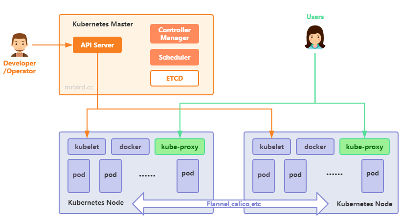
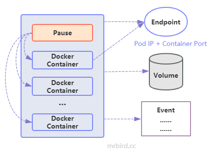
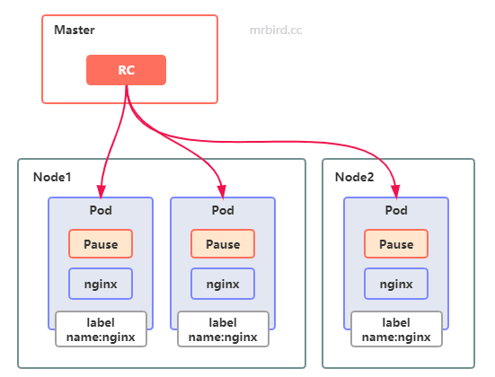
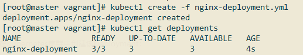
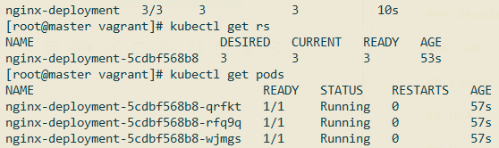
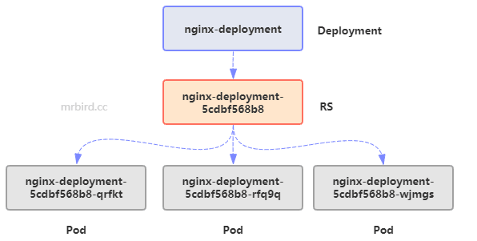
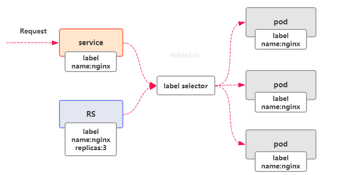
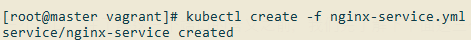
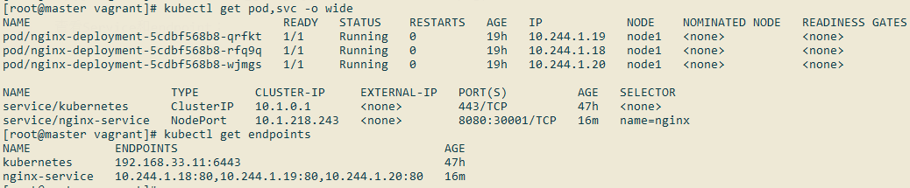
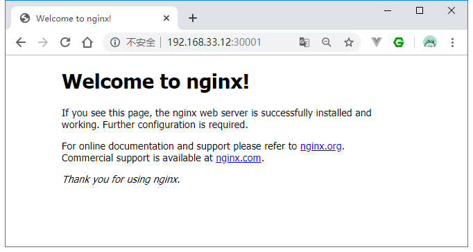

上一节我们已经成功搭建了Kubernetes集群，Kubernetes包含了大量的概念和术语，比如Master、Node、Pod、Replication Controller、Service等等，在深入学习Kubernetes之前，有必要捋清Kubernetes架构设计和这些术语的含义。
Kubernetes架构
Kubernetes基本架构如下图所示：

由上图我们可以看出，Kubernetes集群节点可分为Master和Node：
- Master：指的是集群中的控制节点，负责管理和控制整个集群。基本上我们对Kubernetes集群的操作都是在Master节点上完成的；
- Node：除了Master外，Kubernetes集群中其他节点称为Node。每个Node都将负责运行Master指派的Docker容器，当某个Node宕机后，这些工作会被Master转移到别的Node上。
Master节点上主要包含了以下这些关接的进程:
- API Server：提供了HTTP Rest接口的关键服务进程，是Kubernetes里所有资源的增、删、改、查等操作的唯一入口，也是集群控制的入口进程；
- Controller Manager：负责维护集群的状态，比如故障检测，扩缩容，滚动更新等等；
- Scheduler：负责资源的调度，按照预定的策略把pod调度到指定的node节点；
- etcd：存储Kubernetes集群信息。
Node节点上主要包含了以下这些关接的进程:
- kubelet：负责Pod对应的容器的创建、启停等任务；
- kube-proxy：实现Kubernetes Service的通信与负载均衡机制的重要组件；
- docker：Docker引擎，负责本机的容器创建和管理工作；
- pod：Pod是Kubernetes中能够创建和部署的最小单元，是Kubernetes集群中的一个应用实例。Pod包含了一个“根容器”Pause和多个Docker容器；
Kubernetes节点间的网络通信通过网络插件实现，比如Flannel，Calico等。
Pod管理对象
Pod管理对象指的是Kubernetes中可以用于创建和管理Pod的组件，比如RC(RS)，Deployment，StableSet等等。在了解这些组件前，先来看看Pod的组成：

Pod包含一个Pause容器和多个Docker容器，Pause容器用于管理这些Docker容器。
Pod可以通过yaml文件来创建，下面举个简单的例子:
1 | apiVersion: v1 |
每个Pod都包含一个唯一的IP地址，称为Pod IP，Kubernetes集群内的任意两个Pod之间都能正常通信。Pod IP加上上面定义的80端口，组成了一个Endpoint，代表此Pod里的一个服务进程的对外通信地址。Pod的相关内容存储在Volume中，Pod的相关运行记录可以通过Event查看：

在定义Pod的时候我们也可以指定资源资源限额，资源主要包括CPU和Memory：
在Kubernetes中，1m表示千分之一CPU，即1000m表示一个CPU；
常用单位有KiB、MiB和GiB等，是二进制表示的字节单位，1 KiB（KibiByte）= 2^10 Bytes = 1024 Bytes = 8192 Bits。
在Kubernetes里，一个计算资源进行配额限定时需要设定以下两个参数：
- Requests：该资源的最小申请量，系统必须满足要求；
- Limits：该资源最大允许使用的量，不能被突破，当容器试图使用超过这个量的资源时，可能会被Kubernetes“杀掉”并重启。
比如修改上面的Pod配置文件，定义资源配额：
1 | apiVersion: v1 |
除了直接使用Pod配置文件来创建Pod外，更为常用的是使用Pod管理对象RC(RS)、Deployment等创建和管理Pod。
RC(RS)
RC全称Replication Controller（副本控制器）,用于控制任意时刻指定Pod的数量都符合预期值。RC配置文件一般包含以下三个部分：
- 期望的Pod副本数量；
- 用于筛选Pod的Label Selector；
- 创建Pod的模板（当数量少于预期的时候，用这个模板创建Pod）。
举个RC yaml的例子：
1 | apiVersion: v1 |
通过这个RC，我们可以实现：在Kubernetes集群中，任意时刻都存在3个运行着Nginx容器的Pod，即通过这个RC我们创建了一个Nginx数量为3的Nginx集群（其中一种可能性）：

在Kubernetes的发展中，RC升级为了Replica Set，俗称RS，语法大致和RC一致。RS和RC最大的区别在于：RS拥有更为🐂🍺的Pod筛选器。比如：
1 | apiVersion: apps/v1 |
上面的RS筛选Pod规则为：筛选标签包含tier为frontend，并且release的值为stable或者snapshot的Pod。
总之，RC(RS)的作用为:
- Pod的创建及数量控制；
- 通过改变RC里的Pod副本数量，可以实现Pod的扩容或缩容；
- 通过改变RC里Pod模板中的镜像版本，可以实现Pod的滚动升级。
Deployment
Deployment可以看成是RS的升级版组件，内部使用RS管理Pod，和RS相比最大的不同在于Deployment可以随时查看Pod的部署状态。Deployment的yaml配置和RS差不多，举个Deployment yaml的例子(nginx-deployment.yml):
1 | apiVersion: apps/v1 |
除了kind，其他都和RS差不多。在Kubernetes集群中创建该Deployment：

- READY：集群中准备就绪的Pod数量；
- UP-TO-DATE：最新版本的Pod的副本数量，用于指示在滚动升级的过程中，有多少个Pod副本已经成功升级；
- AVAILABLE：当前集群中可用的Pod副本数量，即集群中当前存活的Pod数量。
查看RS和Pod：

可以看到它们的关系为deployment -> rs -> pods：

StatefulSet
StatefulSet（有状态集合）可以看成是Deployment的一个变种，适合用于构建MySQL集群、MongoDB集群等有状态的集群，这些集群有以下这些共同特点：
- 集群规模相对固定，不能随意变动；
- 集群中每个Pod都是有状态的，即数据会被持久化到存储中；
- 每个Pod都有固定的ID。
StatefulSet创建的Pod集群符合上面的需求，具有如下特点:
- 每个Pod的名称在创建前就可以确定下来了。比如StatefulSet的名称为mysql，那么第一个Pod叫mysql-0，第二个叫mysql-1，以此类推；
- Pod的启停试是按照顺序来的；
- Pod通过PV或者PVC来持久化存储。
这里就先不深入研究StatefulSet了，后面再找机会研究。
Job
Job是一种特殊的Pod管理对象，是一种一次性Pod运行任务，任务结束后，Pod的生命周期也就结束了。Kubernetes中支持Cron表达式的任务称为CronJob，后面接触到了再仔细研究😪。
Label
就如上面所说，Label就是用于给Pod打标签用的，供Pod管理对象、Service等筛选使用。
HPA
除了使用kubectl scale命令修改Pod数量实现扩容或者缩容外，我们可以借助HPA（Horizontal Pod Autoscaling，Pod横向自动扩展）来完成Pod的自动化扩缩容。举个HPA的例子：
1 | apiVersion: autoscaling/v1 |
上面定义了一个名为nginx-hpa的HPA，监控名称为nginx-deployment的Deployment中的Pod，当其targetCPUUtilizationPercentage的值大于80%时，将发生动态扩容行为，并且Pod的数量必须再3~10之间。
targetCPUUtilizationPercentage指的是Pod一分钟内CPU使用率的算数平均值。比如Pod的requests cpu为0.4，当前CPU使用量为0.3，则CPU使用率为75%。所以要使用HPA的功能，Pod必须指定了requests cpu值。
Service
Service、RC和Pod之间的关系如下图所示：

从图中可以看出，Service是外界访问Pod的桥梁，Service通过Label Selector来筛选处符合的Pod，将请求均衡的转发到目标Pod上。前面例子中，我们通过Deployment创建了三个Nginx Pod，但现在外界并不能直接访问它们，我们可以创建一个Service来实现这个需求：
1 | vim nginx-service.yml |
内容如下所示：
1 | apiVersion: v1 |
上面配置中spec.ports定义了三个端口，在了解这三个端口的含义之前，我们先了解下下面这三个IP的含义：
- Node IP：Node的IP地址，Node是部署在宿主机上的，所以实际上就是宿主机的IP地址，不会发生改变；
- Pod IP：Pod的IP地址，由于动态扩缩容、宕机转移等原因，这个IP经常会发生改变；
- Cluster IP：Service的IP地址，在一个完整的Service生命周期内是不会改变的。
其中Pod IP和Cluster IP是属于Kubernetes集群范围内的，外界无法直接访问。
再回头看上面三个端口的含义：
- port：指定Service的端口号；
- targetPort：目标Pod的端口，根据前面nginx-deployment的定义，这里应该指定为80；
- nodePort：在Node上开启的监听端口，用于外界通过
Cluster IP:nodePort来访问对应的Service。
使用nodePort时，需要将Service的type指定为NodePort，并且nodePort有范围限制，必须在30000-32767之间。
使用kubectl create -f nginx-service.yml创建该Service：

查看Service和endpoint：

现在我们就可以通过node1 Ip:nodePort来访问Nginx Pod服务了：

Volume
Volume是Pod上能够被多个Docker容器访问的共享目录，Volume的生命周期和Pod相关，与Docker容器无关。可以在定义Pod的时候指定Volume：
1 | apiVersion: v1 |
通常情况下，我们都是现在Pod里声明一个Volume，然后在容器里引用该Volume，并挂载到容器的某个目录上。
比较常用的Volume类型有：
emptyDir：一个emptyDir Volume是在Pod分配到Node时创建的。从它的名称就可以看出，它的初始内容为空，并且无须指定宿主机上对应的目录文件，因为这是Kubernetes自动分配的一个目录，当Pod从Node上移除时，emptyDir中的数据也会被永久删除；
hostPath为在Pod上挂载宿主机上的文件或目录，比如：
1
2
3
4
5spec:
volumes:
- name: "persistend-storage"
hostPath:
path: "/data"
PV,PVC
PV(Persistent Volume)是Kubernetes集群中的某个网络存储对应的一块存储，不属于任何Node，但可以在每个Node上访问；PVC(Persistent Volume Claim，PV声明)，某个Pod需要用到PV前，必须先定义PVC。
定一个NFS类型的PV，声明需要10Gi存储：
1 | apiVersion: v1 |
该PV声明了127.17.0.2NFS系统下的/somepath目录作为网络存储，内存为10Gi，该PV名称为pv01。
accessModes有以下三种模式：
- ReadWriteOnce：读写权限，并且只能被单个Node挂载；
- ReadOnlyMany：只读权限，允许被多个Node挂载；
- ReadWriteMany：读写权限，允许被多个Node挂载。
接着定义一个PVC：
1 | apiVersion: v1 |
该PVC声明了需要8Gi存储空间，刚刚定义的PV符合这个要求，所以会被绑定上。定义了PVC后，就可以在Pod里引用了：
1 | spec: |
PV具有以下几种状态：
- Available：空闲状态；
- Bound：已经绑定到某个PVC上；
- Released：对应的PVC已经被删除，但资源还没有被集群收回；
- Failed：PV自动回收失败。
Namespace
Namespace顾名思义，命名空间，用于资源隔离。默认Kubernetes会创建default命名空间，并且Pod，RC等都是用该命名空间。
我们可以定义自己的命名空间：
1 | apiVersion: v1 |
在创建Pod等资源的时候就可以指定该命名空间了：
1 | apiVersion: v1 |
Annotation
Annotation是用户任意定义的附加信息，便于外部工具查找，比如版本信息，build信息等。
ConfigMap
学过Docker的都知道，我们可以使用挂载目录的方式将宿主机中的配置文件映射到Docker容器内。但这在集群环境下，要挂载的配置文件过多，不仅麻烦而且容易出错，Kubernete的ConfigMap就是用于解决这个问题的。
ConfigMap存储了大量key-value配置，存储在etcd中，通过Volume的方式映射到目标Pod内，成为一份配置文件，ConfigMap实质上就是一个配置中心。
《Kubernetes权威指南(第4版)》读书笔记